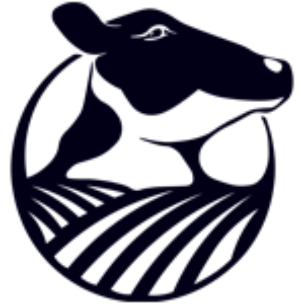

mybook
1 Preface: A Day in the Life on a RuFaS Farm

This document provides a high-level overview of the daily operations of a ruminant farm, as modeled by RuFaS. The overview will be through the eyes of Dr. Rue Fas. One day, Dr. Rue woke up and decided the life of a computer scientist wasn’t for her. So she bought a dairy farm, and this is how she operates it every day.
Feeding the Animals Second thing in the morning, after coffee, Dr. Rue checks the calendar to see if it’s time to formulate a new ration for her animals.
If a new ration needs to be formulated, Dr. Rue heads over to the barn where she keeps all her forages and feed. While there, she checks how well all the forages are holding up. After considering the feeds available, the quality of each one, and how much each one costs, she decides on how productive she wants her animals to be. It is a difficult balancing act, but eventually a ration recipe is found that will keep the animals happy while keeping costs low and sustainability high until the calendar says the ration recipe needs to be reformulated.
When Dr. Rue doesn’t need to formulate a new ration, she takes the last ration recipe she made and grabs all the feed and forage the animals need for the day out of the feed barn. If there isn’t enough for the animals, then a new ration is formulated using the steps above.
Taking Care of the Animals After making sure all the animals’ feed is taken care of, Dr. Rue moves on to taking care of all the other animal tasks. This includes milking the animals, making sure they’re healthy, getting them pregnant, and numerous other tasks.
As dawn breaks on the RuFaS farm, the animals awaken after a restful night. Joe, the farm master, prepares a large whiteboard to track HerdReproductionStatistics, ensuring he has all the data he needs for the day’s activities.
Daily Routine - After leaving their pens, each animal lines up in front of the barn. Julie, the diligent farm veterinarian, examines them one by one. This daily check includes updates on the following areas:
Nutrients: Each animal begins its day with a quick phosphorus requirement assessment. Julie records these details and updates the animal’s phosphorus-related metrics.
Digestive System: With nutrient information in hand, Julie shifts focus to each animal’s digestive system, estimating manure output and enteric methane production for that day.
Milk Production: All milking cows are assessed to gauge daily milk yield and milk component content (fat and protein). Any necessary adjustments are noted.
Animal Growth: Around midday, Julie returns to each animal to evaluate daily weight changes. She updates each animal’s body weight accordingly.
Reproduction: HeiferII and Cow stage animals undergo a reproduction check. Julie closely monitors their reproductive progress and updates the HerdReproductionStatistics details on Joe’s whiteboard.
Life Stage Evaluation: Once the daily routines are complete, Julie determines if any animal is ready to progress to the next life stage. Graduating animals are marked as “graduated” to be moved to their new pens. Animals that must leave the herd—due to health, productivity, or other issues—are labeled as “sold” or “dead” to be removed from the farm population.
Herd Size Maintenance: After every animal has been evaluated, Joe counts the herd to ensure it remains at a healthy size. If it is too large, he arranges the sale of some animals. If the herd is too small, he may opt to purchase additional heiferIIIs to keep numbers at the ideal level.
Herd Structure Management: Joe also manages pen assignments. Newly graduated or newborn animals are guided to suitable pens, while animals marked for removal (sold or deceased) are taken out of the herd and removed from the farm records.
Note: if only interested in a PDF version of the documentation (no website version), then the original LaTeX code can still be used and processed by quarto. For example, the bullet points works as the original LaTeX or translated into markdown syntax:
```{latex}
\begin{itemize}
\item first bullet point
\item second bullet point
\item ...
\end{itemize}
``````{markdown}
* first bullet point
* second bullet point
* ...
```- first bullet point
- second bullet point
- …
but only the markdown works for all document types (html, pdf, word document, presentations, e-books, etc.).
Output Reporting At day’s end, Joe and Julie review the updated HerdReproductionStatistics on the whiteboard. Joe then compiles a concise report summarizing the day’s herd stats. He forwards this information to the OutputManager before wrapping up another successful day on the RuFaS farm.
Dealing with the Manure Once all the animal chores are finished, Dr. Rue moves on to handling the manure. There are a lot of different ways that manure is collected from the animals: it is flushed out of the milking parlor with water, some of the pens need to have it shoveled out along with the bedding in the pen, and some pens have grates that allow the manure to go straight into a pit beneath the barn.
There are a lot of different places where manure is processed and stored on the farm. Dr. Rue goes from place to place on the farm, moving the manure from one place to the next. The manure chores are finished after moving all of the manure into her lagoons, compost piles, and other storages. As this final manure chore is completed, she writes down all the information about how much manure is in all these storages, and some information about what that manure is made of. How much water, nitrogen, phosphorus, other solids, etc. are in each storage.
Managing the Fields Now that Dr. Rue is done making sure all the manure has been handled and stored properly, she can take care of all the field tasks. She has a lot of fields on her farm, each with its own unique schedule. Her field management routine starts with checking each field’s schedule to see if any of them are due to have manure applied, and if so, how much they should have applied. After noting all the manure that is supposed to go onto her fields, these amounts are checked against the amounts of manure that are in her manure storage. Dr. Rue then applies manure to each field on the schedule that day, trying to match the amount applied to the amount on the schedule as best she can.
After making sure every manure item on each farm’s schedule has been taken care of for the day, the schedule for each field is rechecked, one field at a time. In each schedule she checks to see if that field needs to be tilled, if any chemical fertilizer needs to be applied, and if any crops need to be planted or harvested. After all these activities are taken care of, Mother Nature goes to work. The sun shines and rain falls, providing the field with water and energy that grows crops and soaks the soil. After taking care of each field one by one, Dr. Rue drives back to the main farm with all of the crops that she harvested on that day.
Storing the Feeds Now that she is back at the barns, all the crops that were just harvested can be stored. Fortunately she is very organized, so all her harvested crops are separate from one another and each has a label, indicating where it will be stored inside the feed barn. As each feed is stored, it is labeled with the current date. Dr. Rue is exhausted from another long day. She goes back to the farmhouse and rests up, preparing to do the whole thing over again tomorrow. Her daily routine might seem repetitive, but each day is a crucial part of the larger, continuous process that keeps her farm running efficiently and sustainably.